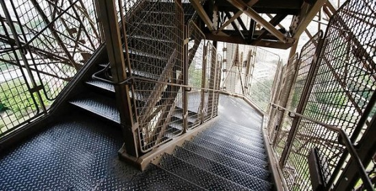
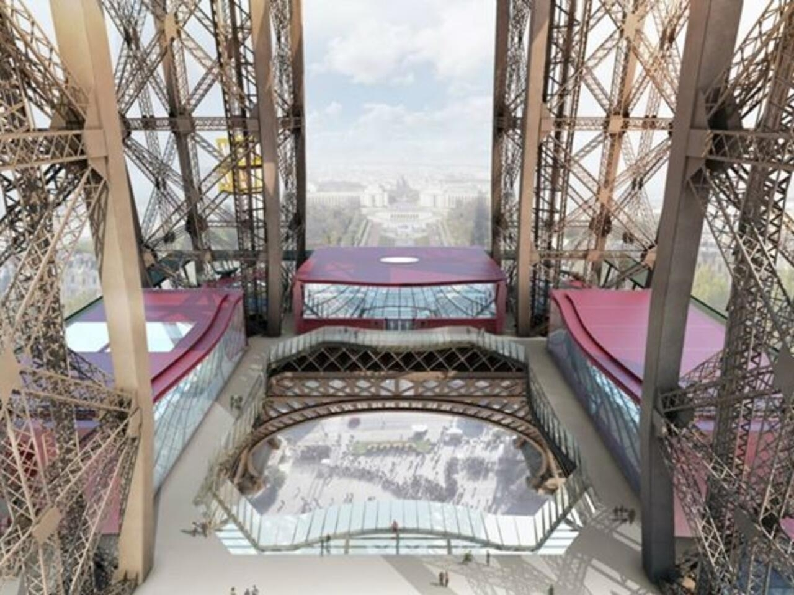
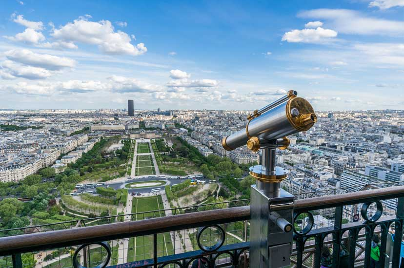
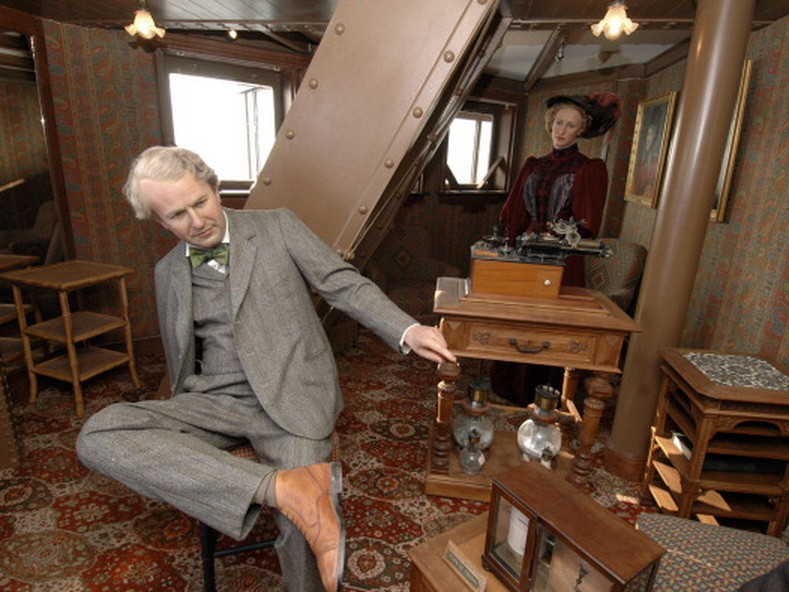

Possui 330 metros de altura e 125 metros de largura na base, fazendo ela ficar na 27ª posição de maiores torres do mundo;
Feita apenas de aço e ferro fundido;
Tem 1710 degraus de escada e um elevador.

A torre é dividida em três andares:
Primeiro andar: Contém alguns estabelecimentos e uma vista para o solo;

Segundo andar: há um mirante para se observar Paris e também algumas
lojinhas;

Terceiro andar: apresenta mais um mirante e uma réplica em cera do
apartamento de Gustave Eiffel, que ficava no topo da Torre Eiffel, mas
que por motivos desconhecidos foi fechada ao público.

Classificação
A Torre Eiffel é classificada como:
Patrimônio material imóvel a nível mundial pela UNESCO desde 1991: